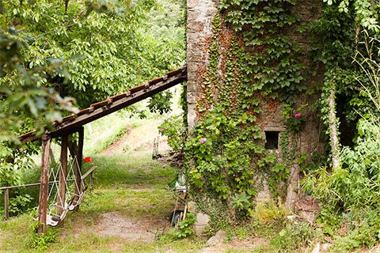
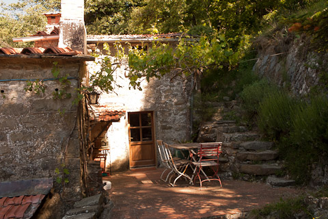
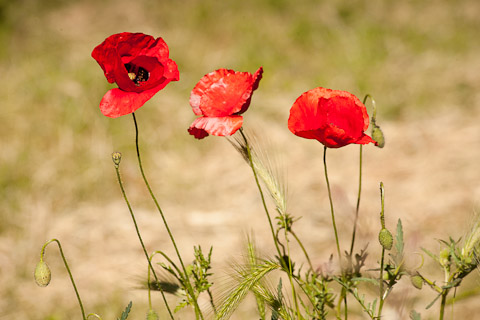
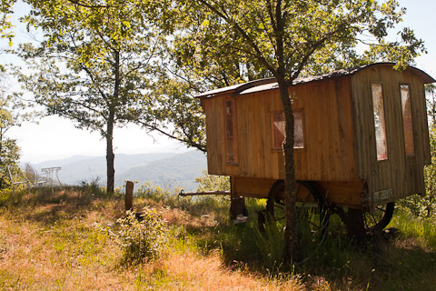

Under the Tuscan sun...
Nestled in a natural amphitheatre in a mountain nature reserve 11 kilometers above Cortona Casa Valentina offers a taste of Tuscany wonder.
The peaceful “Casa Valentina” is set on a huge property overlooking the mystical peaks of Tuscany and Umbria.
This over 800 year old former farmhouse, traditionally built in local Tuscan limestone, has been renovated with great care and simplicity so that the three apartments have kept their original charm.
Surrounded by forest, birdsong and soothing nature it offers some wonderful hiking trails which start at your doorstep.
- 
- 


- 

- 
Tuscany awaits you!
Enjoy with us the traditional landscape of vineyards, cypress trees, olive groves and huge oak forests
Close to Lake Trasimeno lies the charming etruscan town of Cortona. It is a good alternative for anyone wanting a break or a bit more Peace than Party.
You can discover the area by hiking, on mountain bikes, on horseback or with our sailboat at Lake Trasimeno.
From Cortona there are excellent opportunities for cultural excursions in both Tuscany and Umbria. We are ready to help you plan your trips and outdoor activities such as olive picking and olive oil tasting, or a cooking course in Tuscan specialities.